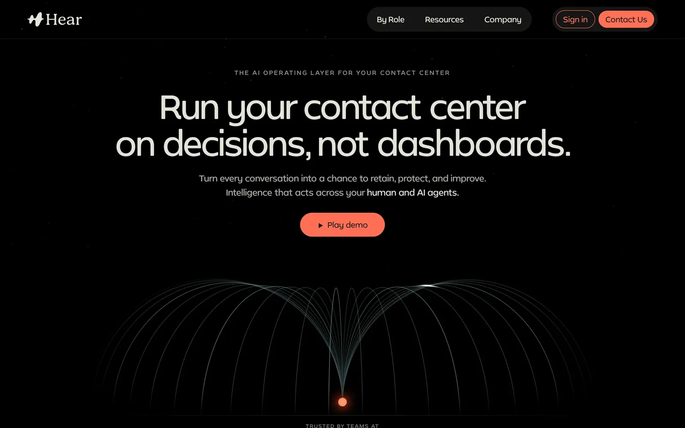
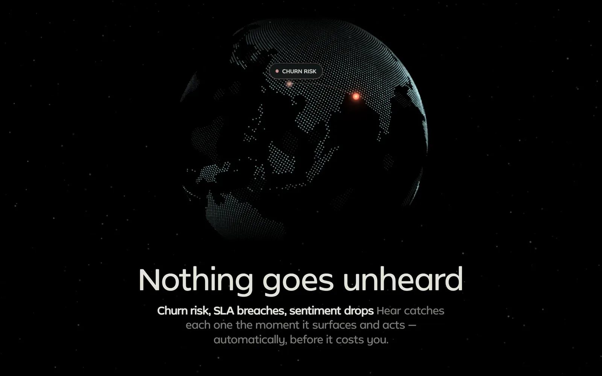
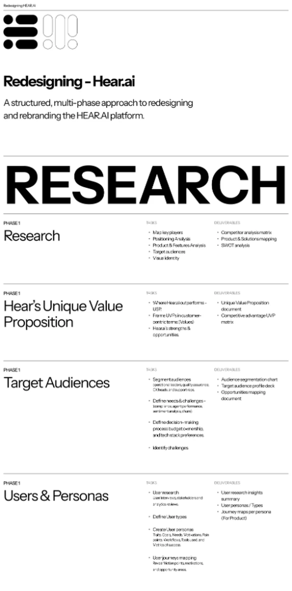
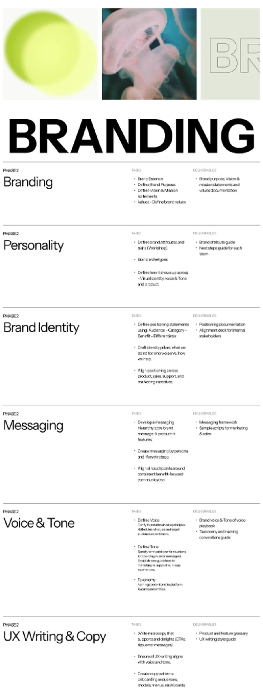
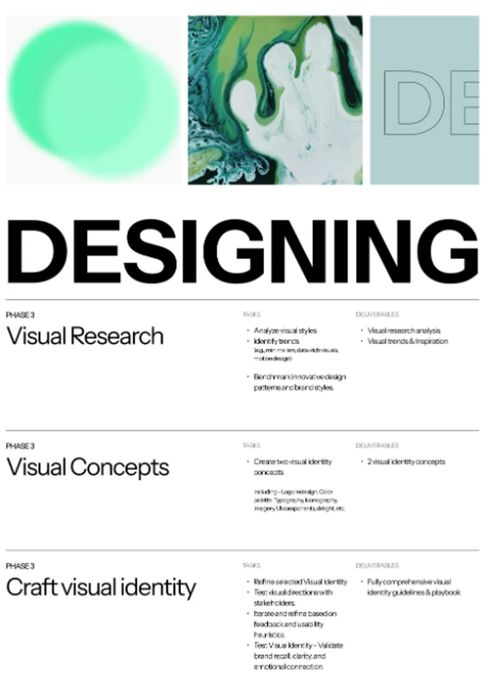
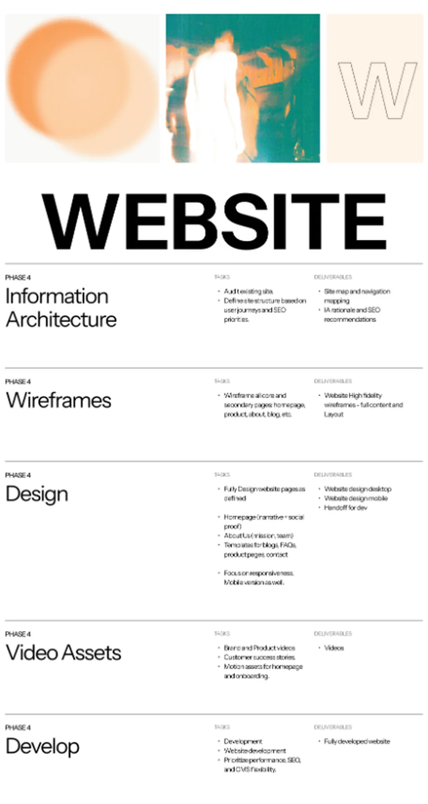
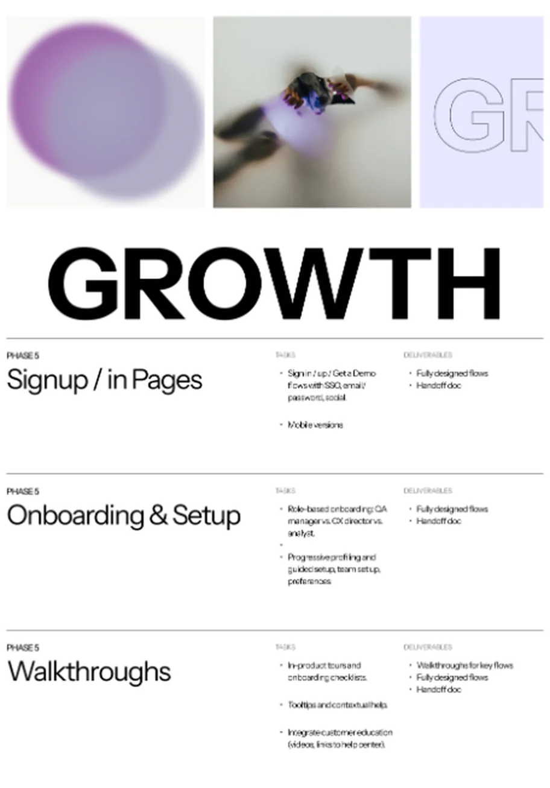
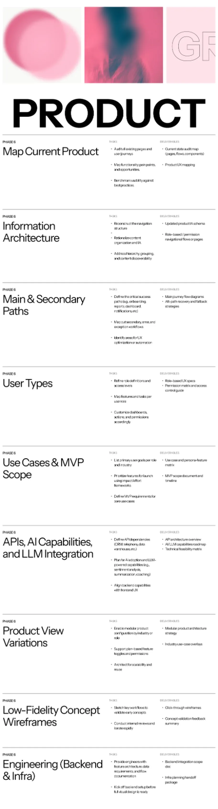
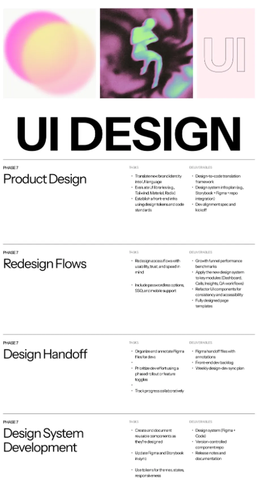
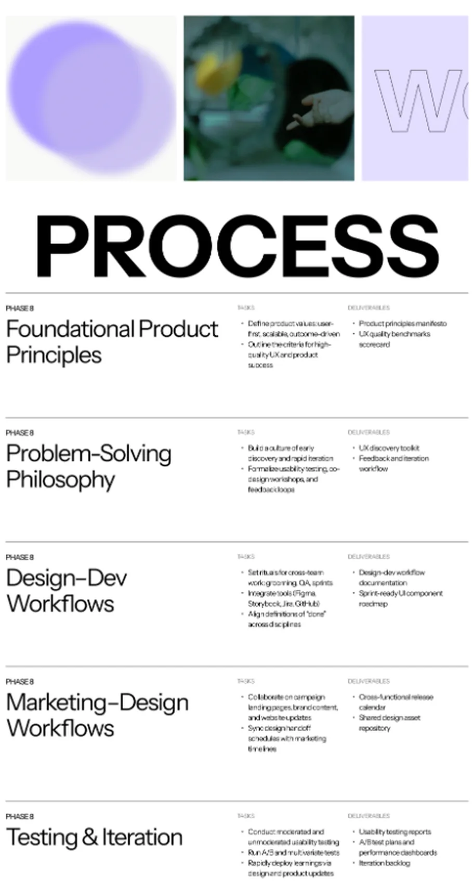

Direction A
Dark, cinematic
Hero, scroll-revealed thesis, the globe, product sections and the integrations wall.
preview ↗︎Boards from the brand, each with its rules written down in its own words.


In the Design Lab: Pulse Coral and Charcoal are color ramps in the Design Lab's Storybook. The design system has its own case study.
I designed and built two directions of the same story. Both are previews.
The new marketing site puts the brand in motion: a thesis that reveals itself as you scroll, a globe where nothing goes unheard, and a clear line from problem to platform.
Hero, scroll-revealed thesis, the globe, product sections and the integrations wall.
preview ↗︎The same story on cream and ink: a card for every role, AI agents held to one standard, customer stories, a dial that walks from learning to acting, and security built in.
preview ↗︎

I carried the brand onto trade-show booths, from the production spec to the stand on the floor, and into print, signage and merch mockups.
The brand didn't stop at the product. Whatever the business needed next, I designed it.


I planned Hear's redesign and rebrand on one Figma board, “Redesigning - Hear.ai”.
Each phase lists its tasks and deliverables, from mapping key players to the workflows between design, development and marketing.
The brand phases, Branding and Designing, come second and third, ahead of the website and the product. UI design opens with the task “Translate new brand identity into UI language”. Open a phase to read it.








Brand boards, booth and print images are my brand work for Hear. Site stills and video are from the Direction A preview. The plan is my Figma board “Redesigning - Hear.ai”. Quoted lines are the boards' own words.